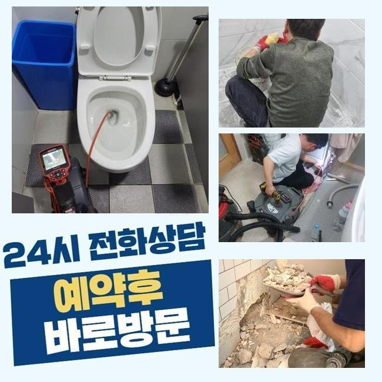
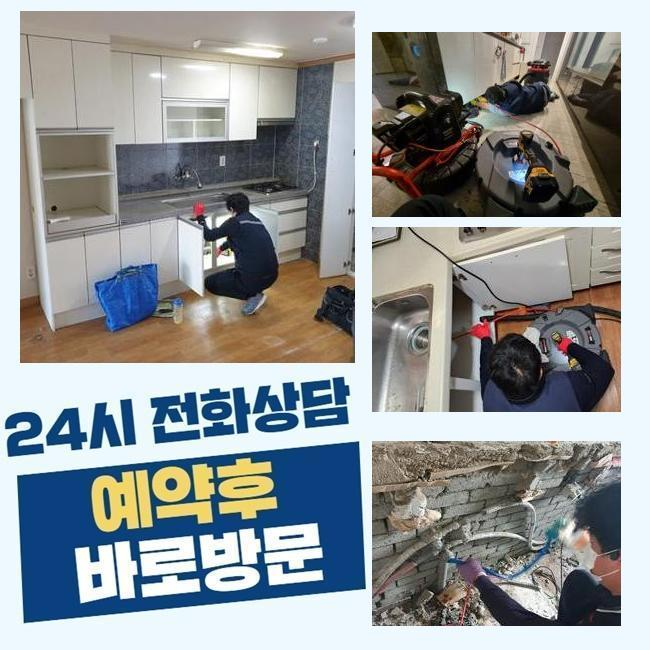
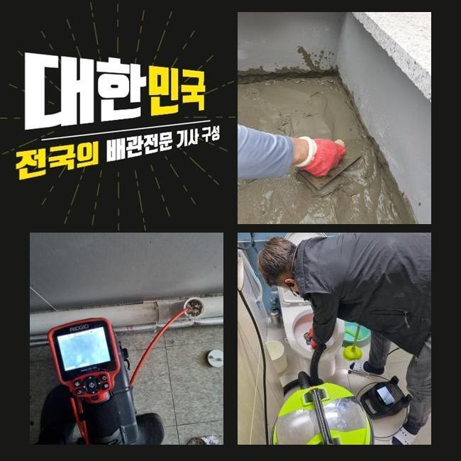
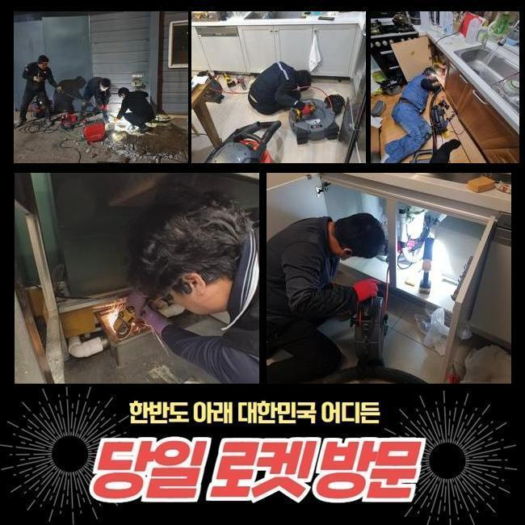
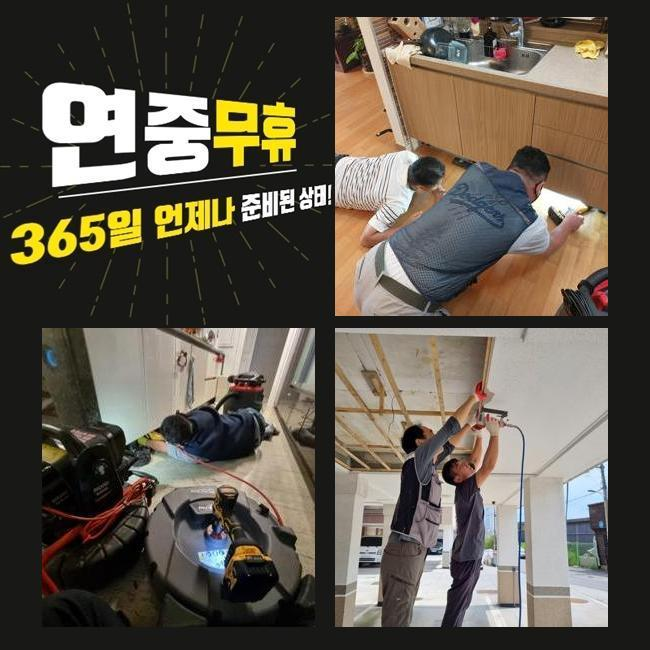
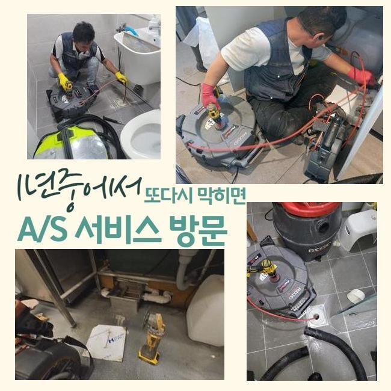
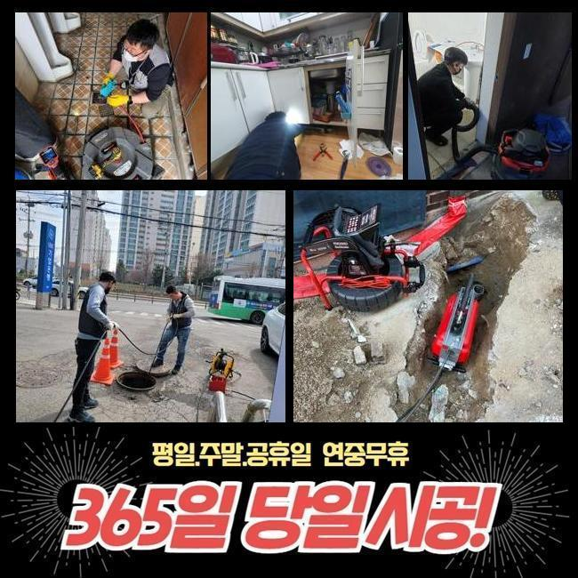

🏠 안양 박달동싱크대뚫음 하수구뚫는곳 누수탐지공사
안양 싱크대막힘 전문 시공 후기

📋 작업 개요
- 위치: 안양
- 서비스 유형: 싱크대막힘, 하수구막힘, 배관막힘, 집수정막힘, 누수수리, 역류해결, 뚫는업체, 배관청소, 설비공사
- 작업 일시: 2025. 2. 21. 18:12
- 업체명: 하수구수사대 (010-5615-2118)
🔍 문제 상황
안양 박달동싱크대뚫음 하수구뚫는곳 누수탐지공사
여러 가구가 모여있는 주택 내부 하수설비를 점검하지 않고 사용하면 이물질이 계속해서 층을 이루면서 하수라인의 역류문제가 발생할 경우가 많아져요
사용하고 계시는 하수시설의 사용년수가 오래 되셨다면 정기적으로 하수구의 상태를 미리 파악하는게 안전합니다
어제 저녁에 의뢰인께서 하수라인이 막혀서 문제가 생겼다고 전화주셨어요
이번 현장은 마을과 거리가 꽤 되는 외진 곳의 주택이였고 집근처에 규모있는 캠핑장도 영업을 하는 상황이였습니다
주택을 지으신게 몇 년 되지도 않았는데 건물 외부에 역류현상이 반복된다고 걱정하셨어요
체크해봤더니 창고에 설치 되어있는 집수정이 밖에 위치한 정화조로 유입되는 방식이였어요
정화조가 위치한 곳이 꽤 멀어서 창고 안에 설치를 해야했다고 하셨어요
고객님께 막혀있는 지점들을 찾는다해도 점검구가 보이지 않는다면 예상시간이 길어질거라고 설명을 드렸고 동의를 해주셨습니다
집수정에서 내시경기를 투입해봤으나 불순물이 꽉 막혀있어서 진행방향으로 라인이 들어가질 않았어요

🔎 원인 분석
💡 전문가 진단: 정밀 진단 장비를 사용하여 슬러지의 고착 여부를 판명하고 타격/세척 작업을 실시했습니다.
이물질이 완전히 막아버린 현재상태를 고객님께도 보여드리며 설명 해드렸어요
샤프트기기로 수리를 진행했습니다
기기의 체인쪽에 머리카락들과 물티슈들이 끝도없이 엉켜서 빠져나왔어요
다세대주택의 막힘사고의 원인들은 물티슈와 머리카락등이 가장 많아요
사례자님께 물티슈와 머리카락은 분리배출을 해야한다고 안내를 해드렸어요
물티슈 자체는 화학제품으로 종이류가 아닌 플라스틱의 형질이므로 물과 만나 녹는게 아니예요
요새 물에 녹는 물티슈도 있다고는 하지만 그것 또한 뭉쳐서 사용하면 하수시설에 이상이 생기면서 결국엔 역류하는 상황이 발생합니다
하수라인 안에 있던 불순물과 같이 슬러지화 되어 막히게 됩니다
사용자께서 물티슈같은 오염물질을 분리배출 하셔야 해요!
배수관은 하수를 처리하는 곳인걸 기억하셔서 작은 쓰레기라도 분리배출을 원칙으로 하시길 바랍니다

🔧 작업 과정
집수정을 어느정도 마무리 하고 창고로 이동해서 내시경기기를 재투입 했어요
하수관이 매우 긴 경우라서 내시경기기계가 끝쪽까지 들어가는게 불가하여 쏜드기계를 활용했습니다
막혀있는 부분에 계속적으로 불순물 제거과정을 이어나갔어요
이번에도 물티슈와 머리카락이 계속 나오는 것을 보고 의뢰인께서도 심각한 상황을 인지하셨다고 하셨어요
저희 전문진에게 또다시 같은 일이 발생하지 않을 수 있는 사용법을 알려달라고 하셔서 하나씩 상세하게 답변 드렸어요
보통 사용하시면서 작은 쓰레기 같은건 흘러갈 것이라고 생각하시겠지만 기울기가 가파른 경우엔 내부에 노폐물도 있어서 머리카락등이나 기름등을 흘려보내면 위험합니다
내시경기기를 활용해서 오염물질이 깨끗하게 나왔는지 체크했어요
정화조가 위치한 쪽의 배관과 집수정쪽의 배관까지 전부 체크 하였고 남은 불순물 하나없이 깨끗해진 배수관이 확인 되었어요
사례자님께도 보여드렸더니 만족해하셨습니다
보통 강한 산성의 약제를 이용하면 쉽게 해결을 할 수 있다고 생각하는 경우도 있으시겠지만 아주 위험한 방법입니다
고객분께서 이용하실때 머리카락등이 오염물질을 따로 처리하고 다세대주택의 사용년수가 오래 되셨다면 사전에 업체를 통해서 정기적인 검사를 진행하셔야 해요
크게 신경을 쓰지않고 사용하시다가 역류상황이 일어나서 대규모 공사를 하게되어 고객님의 비용부담이 커질 수도 있어요
이처럼 하수관도 그냥 방치할수록 비용적인 고객분께서 책임져야 하는 부분이 커지는 것을 기억해주시길 바랍니다
모든 작업을 종료하고 최종적으로 점검하며 청소 해드렸어요
오염된 물에서 악취가 진동하여 세제를 뿌리고 닦은 후에 수전에 호수를 이어서 청소작업까지 마무리했어요
원래라면 주변 장소까지 저희 전문 기술진이 대청소하는 일은 없었습니다


✅ 작업 완료
작업한 현장의 경우에 악취가 심해도 너무 심해서 두고 올 수가 없었어요
저희는 하수관의 물티슈는 물론이고 하수설비 내부의 침전물을 꺼내고 하수의 흐름 방향이 잘 나오는 것까지 확인을 해요
의뢰인께서 저희 전문가를 신뢰하고 맡기실 수 있도록 최선을 다할 것이며 이와 비슷한 경우로 자세하게 알고 싶으신 경우라면 언제든 전화주세요
하수관 막힘문제를 더 나은 방식으로 해결하시려면 최대한 신속한 대응법이 베스트임을 잊지마시고 주의하셔야 합니다
일상 생활 속에서 위와 같은 문제현상이 발생하지 않기를 바라지만 문제가 의심된다면 조속히 전문적인 업체에 의뢰를 하시기 바랍니다




⚠️ 베란다 누수 및 방수 관리 방법
- ✅ 비가 많이 올 때 창틀 주변이나 아래층 천장에 얼룩이 생기는지 정기적으로 확인해 보세요.
- ✅ 우수관 주변 실리콘 마감이 들뜨거나 깨진 틈새가 있는지 손상 여부를 수시로 체크하세요.
- ✅ 베란다 바닥 타일의 줄눈(메지)이 소실되면 그 틈으로 물이 침투하여 누수가 유발됩니다.
- ✅ 누수 의심 증상 발견 시 방치하면 아래층 손실이 커지므로 즉시 전문가의 진단을 받으십시오.
💡 핵심 정리
- 확실한 장비 작업(내시경 점검 및 샤프트 스케일링)으로 원인을 뿌리 뽑습니다.
- 작업 후 1년 이내에 동일한 부위 재발 시 100% 무상 A/S 서비스를 보장합니다.
- 서울 · 경기 · 인천 전 지역에 24시간 언제든 긴급 출동할 수 있도록 항시 대기 중입니다.
❓ 자주 묻는 질문 (FAQ)
🚨 안양 싱크대막힘 문제로 고민이신가요?
정확한 원인 진단과 확실한 시공으로 재발 없는 해결을 약속드립니다.
24시간 긴급 출동 | 서울 · 경기 · 인천 전지역 | 1년 내 재발 시 무상 A/S